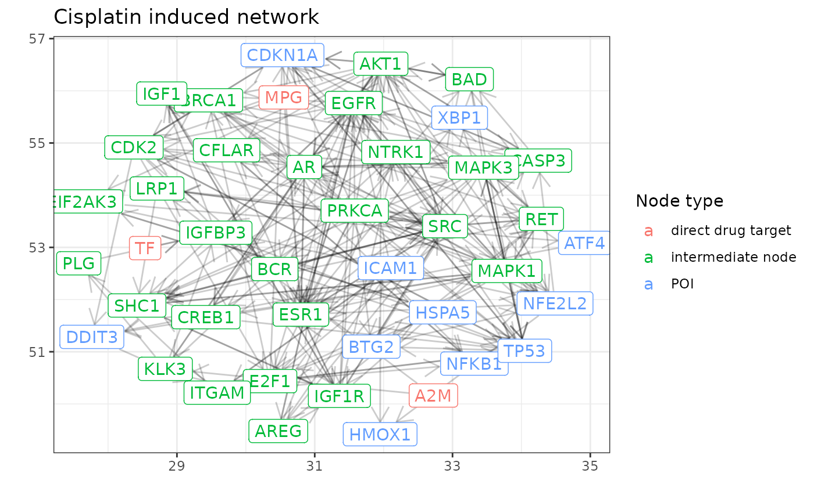

Building protein networks around drug-targets using OmnipathR
Attila Gabor
attila.gabor@bioquant.uni-heidelberg.deAlberto Valdeolivas
Julio Saez-Rodriguez
Institute for Computational Biomedicine, Heidelberg UniversitySource:
vignettes/drug_targets.Rmd
drug_targets.RmdAbstract
Many applications require to connect drugs to proteins in signaling networks. OmnipathR provides easy access to curated pathway resources from OmniPath. Here we use data from DrugBank to find direct protein targets of drugs and to connect them to downstream signaling proteins using OmnipathR.
Introduction
In many applications we would like to understand how a specific drug interacts with the protein signaling network through its targets.
Initialise OmniPath database
We query protein-protein interactions from the webservice of OmniPath [1,2] at https://omnipathdb.org/ using OmnipathR package:
# Download protein-protein interactions
interactions <- import_omnipath_interactions() %>% as_tibble()
# Convert to igraph objects:
OPI_g <- interaction_graph(interactions = interactions)Querying drug targets
For direct drug targets we will use DrugBank [3] database accessed via the dbparser package. Please note, that the following few chuncks of code is not evaluated. DrugBank requires registrations to access the data, therefore we ask the reader to register at DrugBank and download the data from here.
The next block of code is used to process the DrugBank dataset.
library(dbparser)
library(XML)
## parse data from XML and save it to memory
get_xml_db_rows("..path-to-DrugBank/full database.xml")
## load drugs data
drugs <- parse_drug() %>% select(primary_key, name)
drugs <- rename(drugs,drug_name = name)
## load drug target data
drug_targets <-
parse_drug_targets() %>%
select(id, name,organism,parent_key) %>%
rename(target_name = name)
## load polypeptide data
drug_peptides <-
parse_drug_targets_polypeptides() %>%
select(
id,
name,
general_function,
specific_function,
gene_name,
parent_id
) %>%
rename(target_name = name, gene_id = id)
# join the 3 datasets
drug_targets_full <-
inner_join(
drug_targets,
drug_peptides,
by = c("id" = "parent_id", "target_name")
) %>%
inner_join(drugs, by = c("parent_key" = "primary_key")) %>%
select(-other_keys)Here we declare the names of drugs of interest.
drug_names = c(
"Valproat" = "Valproic Acid",
"Diclofenac" = "Diclofenac",
"Paracetamol" = "Acetaminophen",
"Ciproflaxin" = "Ciprofloxacin",
"Nitrofurantoin" = "Nitrofurantoin",
"Tolcapone",
"Azathioprine",
"Troglitazone",
"Nefazodone",
"Ketoconazole",
"Omeprazole",
"Phenytoin",
"Amiodarone",
"Cisplatin",
"Cyclosporin A" = "Cyclosporine",
"Verapamil",
"Buspirone",
"Melatonin",
"N-Acetylcysteine" = "Acetylcysteine",
"Vitamin C" = "Ascorbic acid",
"Famotidine",
"Vancomycin"
)
drug_target_data_sample <-
drug_targets_full %>%
filter(organism == "Humans", drug_name %in% drug_names)We only use a small sample of the database:
drug_targets <-
OmnipathR:::drug_target_data_sample %>%
filter(organism == "Humans", drug_name %in% drug_names)Quality control
Check which drug targets are in Omnipath:
drug_targets %<>%
select(-target_name, -organism) %>%
mutate(in_OP = gene_id %in% c(interactions$source))
# not all drug-targets are in OP.
print(all(drug_targets$in_OP))## [1] FALSE
# But each drug has at least one target in OP.
drug_targets %>% group_by(drug_name) %>% summarise(any(in_OP))## # A tibble: 19 × 2
## drug_name `any(in_OP)`
## <chr> <lgl>
## 1 Acetaminophen TRUE
## 2 Acetylcysteine TRUE
## 3 Amiodarone TRUE
## 4 Ascorbic acid TRUE
## 5 Azathioprine TRUE
## 6 Buspirone TRUE
## 7 Ciprofloxacin FALSE
## 8 Cisplatin TRUE
## 9 Diclofenac TRUE
## 10 Famotidine TRUE
## 11 Ketoconazole TRUE
## 12 Melatonin TRUE
## 13 Nefazodone TRUE
## 14 Omeprazole TRUE
## 15 Phenytoin TRUE
## 16 Tolcapone FALSE
## 17 Troglitazone TRUE
## 18 Valproic Acid TRUE
## 19 Verapamil TRUEDownstream signaling nodes
We would like to investigate the effect of the drugs on some selected proteins. For example, the activity of these proteins are measured upon the drug perturbation. We’ll build a network from the drug targets to these selected nodes.
First we declare protein of interest (POI):
Build network between drug targets and POI
First, we find paths between the drug targets and the POIs. For the sake of this simplicity we focus on drug targets of one drug, Cisplatin.
The paths are represented by a set of nodes:
source_nodes <-
drug_targets %>%
filter(in_OP, drug_name == "Cisplatin") %>%
pull(gene_name)
target_nodes <- POI %>% filter(in_OP) %>% pull(protein)
collected_path_nodes <- list()
for(i_source in 1:length(source_nodes)){
paths <- shortest_paths(
OPI_g,
from = source_nodes[[i_source]],
to = target_nodes,
output = "vpath"
)
path_nodes <- lapply(paths$vpath, names) %>% unlist() %>% unique()
collected_path_nodes[[i_source]] <- path_nodes
}
collected_path_nodes %<>% unlist %>% uniqueThe direct drug targets, the POIs and the intermediate pathway members give rise to the network.
cisplatin_nodes <-
c(source_nodes,target_nodes, collected_path_nodes) %>%
unique()
cisplatin_network <- induced_subgraph(graph = OPI_g, vids = cisplatin_nodes)We annotate the nodes of the network and plot it.
V(cisplatin_network)$node_type <-
ifelse(
V(cisplatin_network)$name %in% source_nodes,
"direct drug target",
ifelse(
V(cisplatin_network)$name %in% target_nodes,
"POI",
"intermediate node"
)
)
ggraph(
cisplatin_network,
layout = "lgl",
area = vcount(cisplatin_network)^2.3,
repulserad = vcount(cisplatin_network)^1.2,
coolexp = 1.1
) +
geom_edge_link(
aes(
start_cap = label_rect(node1.name),
end_cap = label_rect(node2.name)),
arrow = arrow(length = unit(4, "mm")
),
edge_width = .5,
edge_alpha = .2
) +
geom_node_point() +
geom_node_label(aes(label = name, color = node_type)) +
scale_color_discrete(
guide = guide_legend(title = "Node type")
) +
theme_bw() +
xlab("") +
ylab("") +
ggtitle("Cisplatin induced network")## Warning: Using the `size` aesthetic in this geom was deprecated in ggplot2 3.4.0.
## ℹ Please use `linewidth` in the `default_aes` field and elsewhere instead.
The above network represents a way how Cisplatin can influence the POIs. One can for example filter out edges based on the number fo resources reporting the edge or based on the number of papers mentioning it. However, this is already covered by previous pypath tutorials.
Acknowledgements
The above pipeline was inspired by the post of Denes Turei available here.
References
[1] D Turei, A Valdeolivas, L Gul, N Palacio-Escat, M Klein, O Ivanova, M Olbei, A Gabor, F Theis, D Modos, T Korcsmaros and J Saez-Rodriguez (2021) Integrated intra- and intercellular signaling knowledge for multicellular omics analysis. Molecular Systems Biology 17:e9923
[2] D Turei, T Korcsmaros and J Saez-Rodriguez (2016) OmniPath: guidelines and gateway for literature-curated signaling pathway resources. Nature Methods 13(12)
[3] Wishart DS, Feunang YD, Guo AC, Lo EJ, Marcu A, Grant JR, Sajed T, Johnson D, Li C, Sayeeda Z, Assempour N, Iynkkaran I, Liu Y, Maciejewski A, Gale N, Wilson A, Chin L, Cummings R, Le D, Pon A, Knox C, Wilson M. DrugBank 5.0: a major update to the DrugBank database for 2018. Nucleic Acids Res. 2017 Nov 8. doi: 10.1093/nar/gkx1037.
Session info
## R version 4.2.2 (2022-10-31)
## Platform: x86_64-pc-linux-gnu (64-bit)
## Running under: Arch Linux
##
## Matrix products: default
## BLAS: /usr/lib/libopenblasp-r0.3.21.so
## LAPACK: /usr/lib/liblapack.so.3.11.0
##
## locale:
## [1] LC_CTYPE=en_GB.UTF-8 LC_NUMERIC=C
## [3] LC_TIME=en_GB.UTF-8 LC_COLLATE=en_GB.UTF-8
## [5] LC_MONETARY=en_GB.UTF-8 LC_MESSAGES=en_GB.UTF-8
## [7] LC_PAPER=en_GB.UTF-8 LC_NAME=C
## [9] LC_ADDRESS=C LC_TELEPHONE=C
## [11] LC_MEASUREMENT=en_GB.UTF-8 LC_IDENTIFICATION=C
##
## attached base packages:
## [1] stats graphics grDevices utils datasets methods base
##
## other attached packages:
## [1] magrittr_2.0.3 ggraph_2.1.0 igraph_1.4.0 OmnipathR_3.7.8
## [5] ggplot2_3.4.1 dplyr_1.1.0 BiocStyle_2.26.0
##
## loaded via a namespace (and not attached):
## [1] viridis_0.6.2 httr_1.4.4 sass_0.4.5
## [4] tidyr_1.3.0 bit64_4.0.5 vroom_1.6.1
## [7] tidygraph_1.2.2 jsonlite_1.8.4 viridisLite_0.4.1
## [10] bslib_0.4.2 highr_0.10 BiocManager_1.30.19
## [13] cellranger_1.1.0 yaml_2.3.7 progress_1.2.2
## [16] ggrepel_0.9.3 pillar_1.8.1 backports_1.4.1
## [19] glue_1.6.2 digest_0.6.31 polyclip_1.10-4
## [22] checkmate_2.1.0 rvest_1.0.3 colorspace_2.1-0
## [25] htmltools_0.5.4 pkgconfig_2.0.3 logger_0.2.2
## [28] bookdown_0.32 purrr_1.0.1 scales_1.2.1
## [31] tweenr_2.0.2 later_1.3.0 tzdb_0.3.0
## [34] ggforce_0.4.1 tibble_3.1.8 generics_0.1.3
## [37] farver_2.1.1 ellipsis_0.3.2 cachem_1.0.6
## [40] withr_2.5.0 cli_3.6.0 crayon_1.5.2
## [43] readxl_1.4.2 memoise_2.0.1 evaluate_0.20
## [46] fs_1.6.1 fansi_1.0.4 MASS_7.3-58.1
## [49] xml2_1.3.3 textshaping_0.3.6 tools_4.2.2
## [52] prettyunits_1.1.1 hms_1.1.2 lifecycle_1.0.3
## [55] stringr_1.5.0 munsell_0.5.0 compiler_4.2.2
## [58] pkgdown_2.0.7 jquerylib_0.1.4 systemfonts_1.0.4
## [61] rlang_1.0.6 grid_4.2.2 rappdirs_0.3.3
## [64] labeling_0.4.2 rmarkdown_2.20 gtable_0.3.1
## [67] curl_5.0.0 graphlayouts_0.8.3 R6_2.5.1
## [70] gridExtra_2.3 knitr_1.42 bit_4.0.5
## [73] fastmap_1.1.0 utf8_1.2.3 rprojroot_2.0.3
## [76] ragg_1.2.5 readr_2.1.4 desc_1.4.2
## [79] stringi_1.7.12 Rcpp_1.0.10 vctrs_0.5.2
## [82] tidyselect_1.2.0 xfun_0.37